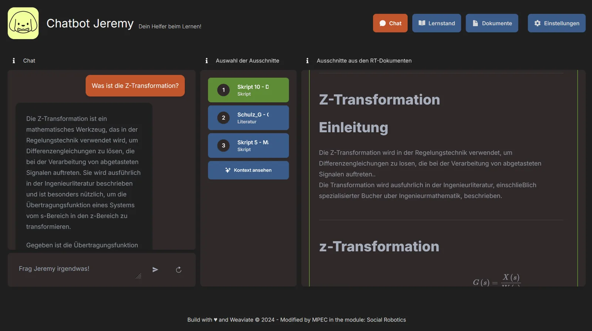
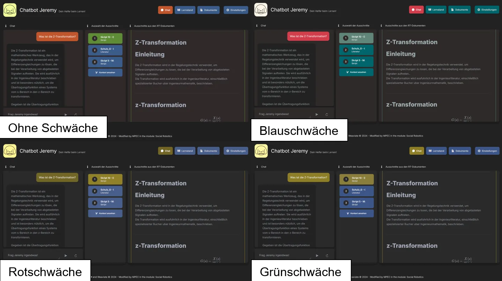

← Selected work
Course project · 02/2024 – 10/2024
Human-Machine-Interaction · TH Köln
Retrieval-Augmented Generation Study Chatbot
An exam-preparation chatbot that shows where its answers come from, measured against a plain LLM for hallucinations.
- Built a RAG chatbot for exam preparation that answers questions using materials such as lecture notes and academic literature and shows the relevant passages in its interface.
- Quantitatively compared retrieval-augmented GPT-4o with base GPT-4o on hallucination rates.
- Conducted a usability study to assess the helpfulness of the displayed information sources.

